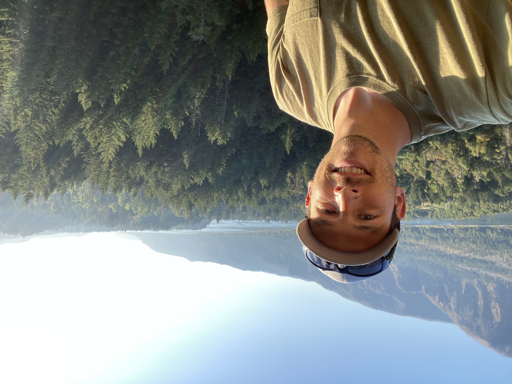

I am passionate about developing custom Salesforce solutions that are scalable, easy to maintain, and intuitive to use.
EducationLed the implementation of a new Salesforce org. Developed 2 highly customized Experience Cloud sites using Aura and LWC to enhance client experiences. Built custom Apex classes, triggers, and flows to automate business processes and streamline operations. Leveraged scrum methodology as Scrum Master to foster teamwork and optimize project delivery.
Contributed to Agile development team, delivering custom enterprise software solutions. Leveraged diverse programming languages, tools, and frameworks to build robust and scalable applications. Successfully addressed complex technical challenges, ensuring timely project delivery.
Served as a Platoon Leader and Executive Officer, commanding and managing 150 personnel. Oversaw the strategic planning, execution, and logistics of cavalry units, responsible for $77M in equipment. Developed strong leadership, communication, and problem-solving skills, thriving in high-pressure, fast-paced environments.